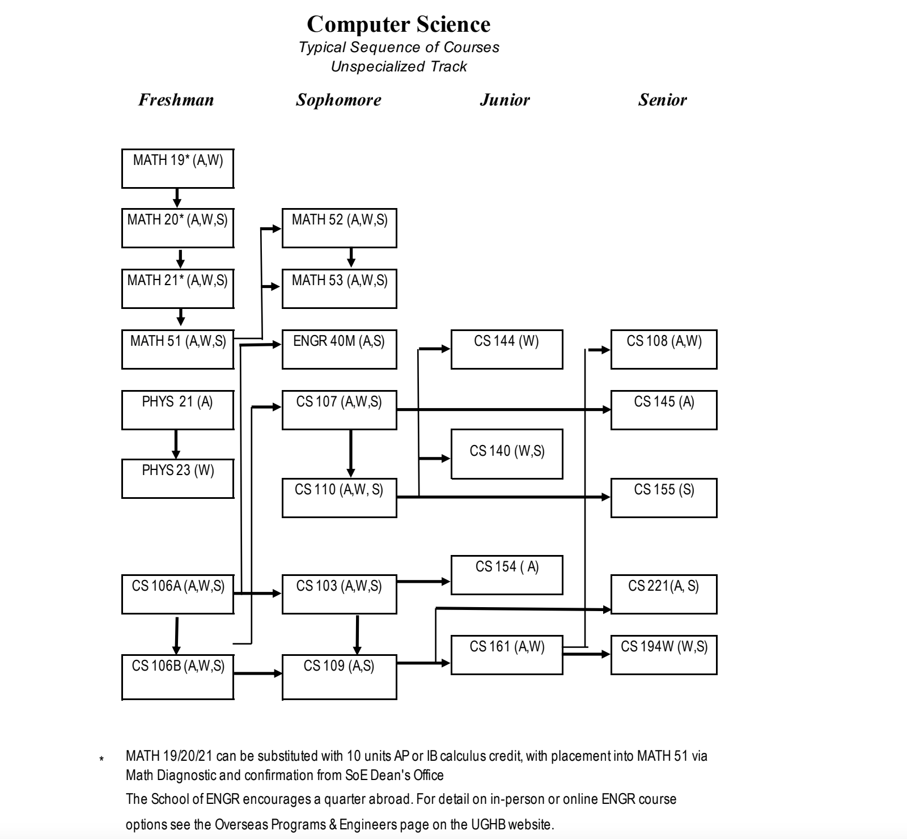

Stanford 计算机科学专业
说到硅谷则必提及斯坦福，斯坦福大学为硅谷的形成与发展奠定了坚实的基础，培养了众多高科技公司、创始人（如惠普、雅虎、谷歌、WhatsApp、Netflix等）与优秀工程师，同时也是图灵奖得主最多的高校。斯坦福大学的课程不仅紧随一线企业的发展需求，还起到引领作用，国内高校的课程则往往落后企业发展十数年之久。
课程说明
斯坦福大学计算机专业的学生需要掌握的课程可以分为工程学院基础要求的课程、6门计算机核心课程，学完了之后，你可以再去选择一个赛道深入研究（这里简称为赛道课程）。
说明
斯坦福大学计算机专业的课程可以直接通过它的课程编号知道它的难易程度以及所属领域，比如深度学习的课程cs231n，这里的编号2指的是二年级，300-399是大三，而0-99则是没有基础的。斯坦福大学也给高中生AP课程或大一零基础的新生准备的零基础导论课或实践课，这些课程都不是必修课程；如果你是高考刚结束，或者大一上学期的学生，可以学习这些课程。
① 工程学院基础要求
斯坦福大学计算机专业隶属于工程学院，所以学生也要满足工程学院基本要求的课程（含必修以及选修），这些课程可以分为数学类、科学类、工程基础类、社会技术类，是所有工程学院的学生都需要学习的。
1、数学类
- 数学核心课，计算机专业的学生必须掌握微积分；
- 计算机科学中的数学，本科需要掌握两门计算机数学课程，计算数学基础(CS103) 和 计算机科学家概率概论(CS109)
- 数学选修课，计算机专业的学生必须再选择两门数学选修课
2、科学类
计算机专业的学生必须同时学习力学课程（PHYSICS21、PHYSICS41、PHYSICS61）和电学和磁学类（PHYSICS23、PHYSICS43、PHYSICS63），计算机专业不需要学习物理实验课。当然你也可以去学习机械、机电学院大一的物理课作为替代。
同时你需要选择一门或两门科学选修课，让科学类的总学分至少为11门，至于科学选修课推荐选修的课程，可以参考你选择的赛道课程的推荐
3、工程基础类
- 编程抽象（CS106B 或 CS106X），CS106X 涵盖与 CS106B 相同的主题，但覆盖更深入，你也可以在学完CS106A 之后再学 CS106X（而不是 CS106B）。即使你有大量的编程经验，也强烈建议学习 CS106X，特别是如果您不懂 C++。这将确保您为以后的 CS 课程中预期的更高级的工作奠定必要的基础。
- 电子学导论(ENGR40A)，电子学导论是电子工程系关于电子学的入门课程。该课程每周有习题集、实验、期中考试和期末考试。
- 工程基础选修课， 你需要从工程学院工程基础列表中选择另一门课，不过你也可以用你选择的赛道课程来替代这门选修课
4、社会技术类
比如和老师在暑假一起做垂直赛道的研究，比如组织有利于工程学院或促进工程协会目标的活动，或者出国去学习海外课程（大约有一半的学生会出国学习海外课程）。海外课程包括为期10周的学制季度课程、为期3到5周的短期学术课程。
② 6门计算机核心课程
核心课程包含系统部分和理论部分，这些课程是计算机专业的学生需要认真学习的基础课程，也是很多专业方向的先修课。
1、核心系统课
- 程序的抽象概念（CS106B或CS106X），主要是C++基础、递归、数据抽象、基础的算法
- 计算机组成与系统（CS107），基于Unix操作系统，从底层硬件到代码，主题包含计算机结构、内存模型、编译以及基础的并发；
- 计算机系统原理（CS110）：如何使用操作系统和网络抽象构建大型系统；
2、核心理论课
- 计算的数学基础（CS103）：数学归纳法、逻辑、集合、函数、关系、DFA's, NFA's、线性回归、图灵机、NP
- 计算机科学家的概率论（CS109）
- 数据结构与算法（CS161）
③ 赛道必修与选修课
学生需要选择一个赛道，并在该赛道学习4-5 门课程来达到专业级别的深度。学生必须完成任何一个赛道方向的要求，通常包括1-2门必修课，1-2门高度相关的课程以及你可以选择一些更广泛的选修课。
斯坦福大学当前赛道分为人工智能、计算理论、计算机系统、人机交互、图形学、信息学、生物计算（以及其他非专业和个性化自主设计的赛道）。

推荐学习课程
① CS 103 计算的数学基础
计算能力的理论极限是什么？计算机能解决哪些问题？哪些不能？我们如何以数学上的确定性来推理这些问题的答案？本课程探讨这些问题的答案，并作为离散数学、可计算性理论和复杂性理论的介绍。课程完成后，学生将能够轻松编写数学证明、推理离散结构、阅读和编写一阶逻辑语句，以及使用计算设备的数学模型。在整个课程中，学生将接触到 19 世纪末和 20 世纪最激动人心的数学和哲学思想。
先修课程： 零基础可学，无先修课程
学习地址： CS 103 计算的数学基础
② CS106a 编程方法
计算机应用工程简介，强调现代软件工程原理：程序设计、分解、封装、抽象和测试。重点是良好的编程风格和各自语言的内置设施。使用 Python 编程语言。
先修课程： 零基础可学，无先修课程
学习地址： CS106a 编程方法
③ CS 106B/106X 编程抽象
抽象及其与编程的关系。数据抽象和模块化的软件工程原理。面向对象编程、基本数据结构（如堆栈、队列、集合）和数据导向设计。递归和递归数据结构（链表、树、图）。时间和空间复杂度分析简介。使用涵盖其基本功能的编程语言 C++。
先修课程： CS106a 编程方法
学习地址： CS106B/CS106X 程序抽象
④ CS 107 计算机组成与系统
介绍计算机系统的基本概念。探索计算机系统如何执行程序和操作数据，从 C 编程语言到微处理器。涵盖的主题包括：C 编程语言、数据表示、机器级代码、计算机算术、代码编译元素、内存组织和管理，以及性能评估和优化。
先修课程： CS106B/CS106X 程序抽象
学习地址： CS 107 计算机组成与系统
⑤ CS 108 面向对象的系统设计
大型 OOP 库环境中的软件设计和构建。用 Java 授课。主题：OOP 设计、设计模式、测试、图形用户界面 (GUI) OOP 库、软件工程策略、团队编程方法
先修课程： CS 107 计算机组成与系统
学习地址： CS 108 面向对象的系统设计
⑥ CS 109 计算机科学家的概率论
主题包括：计数和组合、随机变量、条件概率、独立性、分布、期望、点估计和极限定理。概率在计算机科学中的应用，包括机器学习和在算法分析中使用概率。配套教材是《概率论基础教程》。
先修课程： CS 103 计算的数学基础、CS106B/CS106X 程序抽象
学习地址： 暂未收录
⑦ CS 110 计算机系统原理
计算机软硬件系统工程原理与实践. 主题包括：控制复杂性的技术；使用客户端-服务器设计、虚拟内存和线程的强大模块化；网络；并行活动的原子性和协调性。
先修课程： CS 107 计算机组成与系统
学习地址： CS 110 计算机系统原理
⑧ CS 140 操作系统
通过操作系统设计和实现的镜头涵盖计算机系统中的关键概念。主题包括线程、调度、n 进程、虚拟内存、同步、多核架构、n 内存一致性、硬件原子、内存分配器、链接、I/O、n 文件系统和虚拟机。Pintos 操作系统中的四核编程项目强化了这些概念。
先修课程： CS 107 计算机组成与系统
学习地址： CS 140 操作系统
⑨ CS 143 编译器
编译器和解释器的设计和实现的原则和实践。主题：词法分析；解析理论；符号表；类型系统；范围; 语义分析；中间表示；运行时环境；代码生成；和基本的程序分析和优化。学生在课程编程项目中为简单的面向对象语言构建编译器。
先修课程： CS 103 计算的数学基础、CS 107 计算机组成与系统
学习地址： CS 143 编译器
⑩ CS 144 计算机网络
原则与实践。计算机网络的结构和组件，重点是互联网。分组交换、分层和路由。传输和 TCP：通过不可靠的网络进行可靠传递、流量控制、拥塞控制。网络名称、地址和以太网交换。包括重要的 C/C++ 编程组件；学生构建互联网 TCP/IP 软件的一部分。
先修课程： CS 110 计算机系统原理
学习地址： CS 144 计算机网络
⑪ CS145 数据管理和数据系统
介绍数据库和数据密集型系统的使用、设计和实现，包括数据模型；架构设计；数据存储; 查询处理、查询优化和成本估算；并发控制、事务和故障恢复；分布式和并行执行；半结构化数据库；和数据系统支持高级分析和机器学习。
先修课程： CS 103 计算的数学基础、CS 107 计算机组成与系统
学习地址： CS145 数据管理和数据系统
⑫ CS 161 算法的设计与分析
最差和平均情况分析。递归和渐近线。用于排序、搜索和选择的高效算法。数据结构：二叉搜索树、堆、哈希表。算法设计技术：分治法、动态规划、贪心算法、随机化。基本图问题的算法：最小成本生成树、连通分量、拓扑排序和最短路径。可能的附加主题：网络流、字符串搜索、摊销分析、稳定匹配和近似算法。
先修课程： CS 103 计算的数学基础 和 CS 109 计算机科学家的概率论
学习地址： CS 161 算法的设计与分析
⑬ CS 166 数据结构
本课程深入探讨数据结构的设计、分析、实现和理论。在本季度中，我们将探索数据结构设计中的基本技术（等距、定名、随机化等），并探索对开发新数据结构有用的观点和直觉。我们将通过调查经典数据结构（如 Fibonacci 堆和后缀树）以及更现代的数据结构（如 count-min 草图和 rangenminimum 查询）来做到这一点。到我们完成时，我们将看到一些真正漂亮的有效解决问题的策略。
先修课程： CS 107 计算机组成与系统、CS 161 算法的设计与分析
学习地址： CS 166 数据结构
⑭ CS 244B 分布式系统
分布式操作系统和应用问题，强调高级协议和分布式状态共享作为关键技术。主题：分布式共享内存、面向对象的分布式系统设计、分布式目录服务、原子事务和时间同步、应用程序足够的一致性、文件访问、进程调度、进程迁移以及关于分布式、规模、健壮性的存储/通信抽象面对失败和安全。
先修课程： CS 144 计算机网络
学习地址： CS 244B 分布式系统
⑮ CS 245 数据密集型系统的原理
最重要的计算机应用程序必须可靠地管理和操作数据集。本课程涵盖现代数据存储和处理系统的架构，包括关系数据库、集群计算框架、流系统和机器学习系统。主题包括存储管理、查询优化、事务、并发、故障恢复和并行处理，重点关注跨多种类型的数据密集型系统共享的关键设计思想。
先修课程： CS145 数据管理和数据系统、CS 161 算法的设计与分析
学习地址： CS 245 数据密集型系统的原理